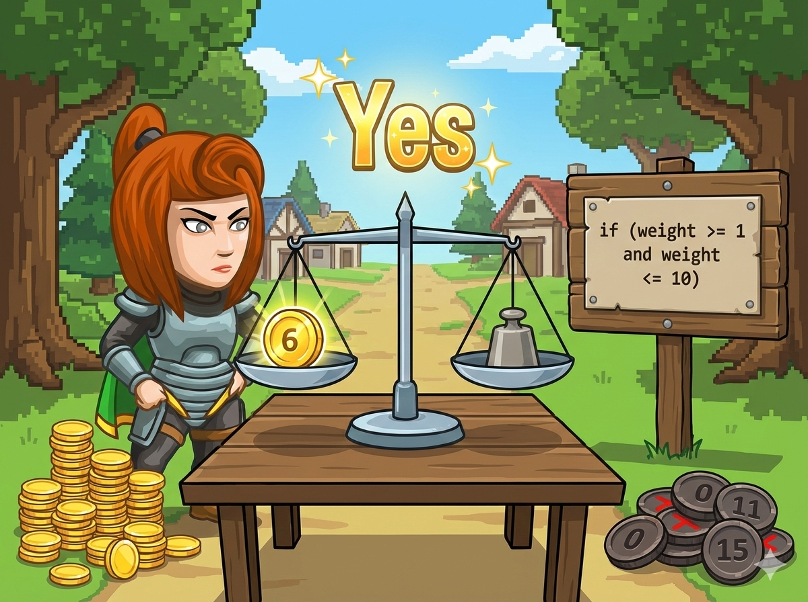

森林平原村 🌲 最近出现了大量假币，村民们苦恼不已。 英雄通过仔细研究，发现了一个重要的鉴别规律：
✅ 真币： 重量在 1 到 10 之间（包括 1 和 10）。
❌ 假币： 其他重量的硬币。
👉 任务： 编写程序，读入硬币重量，判断它是真币 (Yes) 还是假币 (No)。
这道题的核心是 “区间判断”，也就是判断一个数字是否在某个范围内。
在数学里，我们写 1 ≤ w ≤ 10。但在编程中，这种写法是不被允许的（或者含义不同）！
( w ≥ 1 ) AND ( w ≤ 10 )
必须同时满足 大于等于 1 并且 小于等于 10。
英雄拿起了天平，快写代码帮他鉴别真伪！
#include <iostream> using namespace std; int main() { // 1️⃣ 声明变量 w (重量 weight) int w; // 2️⃣ 输入重量 cin >> w; // 3️⃣ 区间判断：[1, 10] // 必须拆分为：大于等于1 并且 小于等于10 if (w >= 1 && w <= 10) { cout << "Yes"; // 真币 } else { cout << "No"; // 假币 } return 0; }
# 1️⃣ 输入：读取重量，存入变量 w w = int(input()) # 2️⃣ 区间判断 # Python 允许直接写数学上的连写形式 if 1 <= w <= 10: print("Yes") # 真币 else: print("No") # 假币
⭐ 注意边界： 题目说“包含 1 和 10”，所以要用 大于等于 (>=) 和 小于等于 (<=)，不能只写大于或小于哦！